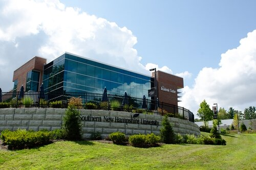
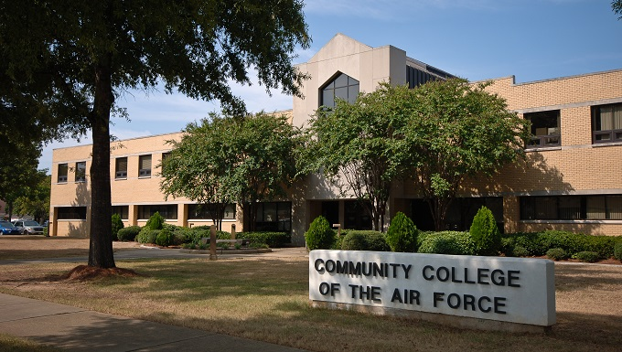

Driven Computer Science student working in office administration and accounting following four years of
dedicated service in the United States Air Force. Eager to leverage my diverse experiences and technical acumen to
transition into the dynamic field of software development. Committed to applying the discipline, attention to detail,
and problem-solving skills cultivated during military service to excel in designing and implementing innovative
software solutions.
WORK EXPERIENCE
John D. Houston, CPA
Office Administrator and Accountant Chattanooga,
TN | May 2023 - Present
- Trained in accounting and does much of the work on clients’ individual, business, and fiduciary tax returns
- Bookkeeping and account reconciliation
- Manages all office supply ordering and organizaton
- File organizaton and record keeping
- Maintains positive client relations
United States Air Force, Active Duty
Weather Journeyman, Senior Airman
Hampton, VA | Feb. 2019 - Apr. 2023
- Underwent Tier 5 Investigation to obtain top-secret security clearance (active June 2019 – present)
- Communicated critical, real-time meteorological hazard impacts directly to key decision-makers enabling
continuous national defense operations
- Analyzed raw computer forecast model data and real-time weather information to develop and disseminate
tailored airfield and flight weather forecasts
- Provided meteorological support for multiple key military operations and produces weather briefings for fighter
pilots
- Formulated weather forecasts and provided resource protection for $9.7 Billion in government assets and
20,000 personnel on Joint Base Langley-Eustis
Texas Roadhouse
Server/Trainer Chattanooga, TN | Feb. 2019 -
Apr. 2023
- Performed fast-paced operations while maintaining high standards of quality customer service
- Trained new team members in daily operations, food safety compliance, and customer service
- Built excellent rapport with many return guests, being personally requested on a regular basis
- Selected as local store mascot and Santa Claus due to high energy and ability to positively interact with people
- Food safety compliance
Chick-Fil-A
Team Lead/Trainer Chattanooga, TN | Oct. 2017 - May 2018
- Fully trained and equipped for all Front-of-House and Back-of-House roles, frequently working many positions
during a shift when understaffed
- Trained new team members in daily operations, food safety compliance, and customer service
- Led team of 7-10 Front-of-House employees during rush hours, opening and closing, while still manning cash
register, filling food orders, manning drive-thru, etc.
- Inventory management and food safety compliance
Covenant Lawn Care
Landscaper Chattanooga, TN | Summer 2017
- Fully trained and highly proficient at mowing, weed-eating, mulching, etc.
- Served as driver and team lead when needed
- Collected client payments
- Maintained positive client relations
Jackson Farms
Farmhand Pikeville, TN | Summer 2016
- Planted, picked, sorted, and cleaned vegetables and fruits
- Filled bulk orders for commerical customers
- Loaded trailers and trucks for store and offsite customers
- Worked early and long hours as required
EDUCATION
The University of Tennessee at Chattanooga
Computer Science: Software Systems Aug. 2023 - Present
- 3.75 GPA
- Completing schooling full-time while consistently exceeding workplace standards
Southern New Hampshire University
Interdisciplinary Studies Online | May 2021 - July 2022
- 4.0 GPA
- Completed 33 credit hours
- Recognized by school, named to Honor Roll and President's List
Community College of the Air Force
Meteorology Feb. 2019 - Aug. 2021
- 4.0 GPA
- Awarded Associate in Applied Science Meteorology in August 2021
Some Of My Skills
Costumer service, communication (written and oral), data analysis and interpretation, critical thinking, leadership, people skills, team player,
MicroSoft Office, quick learner, goal-oriented, reliable, positive attitude
Back to the top? Click here.
{kind=link}
{kind=link}
{kind=link}